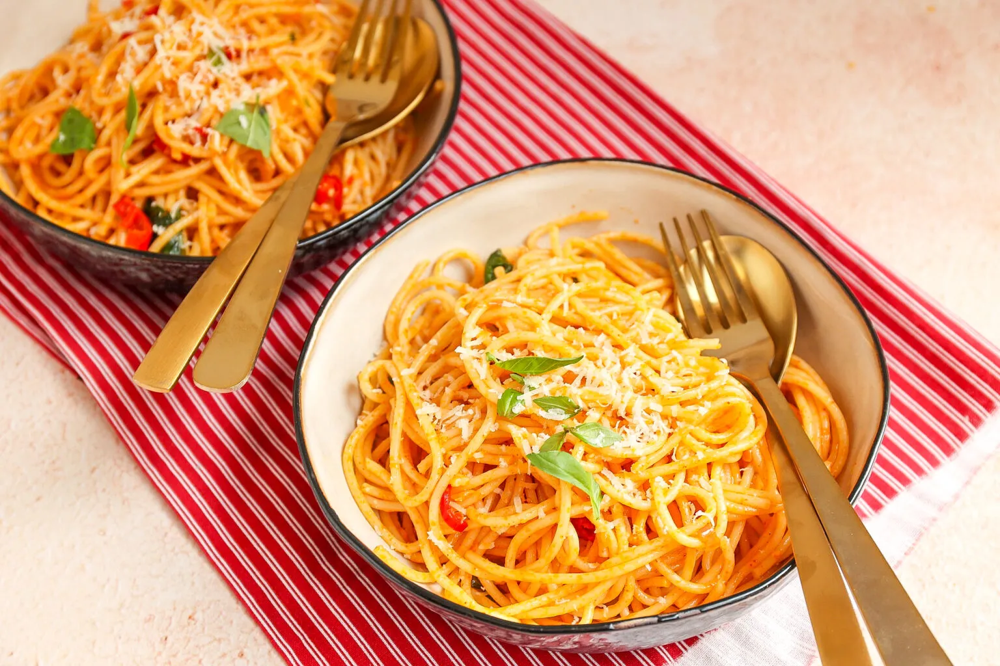

Terug naar beginpagina

Ahmed Yildiz
Beste, Ahmed Yildiz
Ik heb in uw eerder gestuurde email begrepen dat u graag vegetariër wilt worden. U weet nog niet waar u moet beginnen. Ik ga u hiermee helpen. Dit zijn de topics waar ik het over ga hebben: voor- en nadelen van vegetarisch eten voor je gezondheid, voor- en nadelen voor vegetarisch eten voor de maatschappij, tips om vegetariër te worden en als laatst een voorbeeld van een vegetarische gerecht.
Topic 1: Voor- en nadelen van een vegetarisch eten voor je gezondheid
Voordelen:
- Kleinere kans om overgewicht te krijgen
Omdat je als vegetariër zijnde veel groente en fruit eet en juist weinig eten eet met veel vetten erin, verkleint dit de kans om overgewicht te krijgen en eet je dus als vegetariër zijnde over het algemeen gezonder dan iemand die geen vegetariër is.
- Kleinere kans op ziekte
Plantaardige voeding bevat bijna geen cholesterol en weinig verzadigde vetten. Door (meer) plantaardig te eten, verklein je de kans op hart- en vaatziekten, diabetes, kanker en diverse andere ziekten.
Nadelen:
- Mogelijk een tekort aan voedingsstoffen
Als vegetariër zijnde kun je mogelijk bepaalde voedingsstoffen mislopen. Voorbeelden hiervan zijn eiwitten, vitamine B1, vitamine B12, vitamine D, ijzer en omega 3. Al deze stoffen zijn hard nodig voor het lichaam, Zo kan bijvoorbeeld te weinig eiwitten binnenkrijgen er voor zorgen dat je spieren aangetast worden en bij te weinig vitamine D je kans loopt om botontkalking te krijgen
Topic 2: Voor- en nadelen voor vegetarisch eten voor de maatschappij
Voordelen:
- Diervriendelijker
Omdat je als vegetariër zijnde geen vlees meer eet, hoeven er een stuk minder dieren gefokt en geslacht te worden.
- Minder uitstoot van broeikasgassen
Koeien stoten heel veel broeikasgassen uit. Deze gassen zijn heel erg schadelijk voor het milieu. 1 koe stoot jaarlijks net zoveel broeikasgassen uit als een auto die anderhalf keer de aarde rondrijdt. Elke koe minder is is al een heel groot verschil.
Nadelen:
Nadelen voor onze maatschappij als je vegetariër bent zijn er eigenlijk niet. Het zijn voornamelijk voordelen. Wel zijn er nadelen voor je gezondheid als je het vegetariër zijn niet “goed” doet.
Topic 3: Tips om vegetarier te worden.
Tip 1: Eet vaker vegetarisch in je eigen tempo
Uw nieuwe voedingspatroon eigen maken kost tijd en gaat dit aan het begin niet gelijk vlekkeloos. Doe het op je eigen tempo: begin met 1 of 2 dagen in de week vegetarisch te eten en bereid dit uit naar meer dagen. Eén dag in de week is ook al een hele stap!
Tip 2: Van AVG’tje naar groentegerecht met een vleesvervanger
Aardappels, vlees en groente is echt een Nederlandse gewoonte. Het vlees kun je hier heel makkelijk vervangen door een vleesvervanger, dit is tegenwoordig volop in de supermarkt te krijgen. Vervang bijvoorbeeld een hamburger door een groenteburger of een vegetarische schnitzel.
Tip 3: Experimenteer met de wereldkeuken
Onze keuken is vaak gefocust op vlees en vis, maar bijvoorbeeld de Indiase, Thaise en Vietnamese keuken is vegetarisch eten onderdeel van de cultuur. Denk aan curry’s, wokgerechten en soepen.
Tip 4: Kijk ook eens naar je lunch
Veel mensen denken bij vegetarisch eten aan het avondeten, maar misschien eet je wel vele vleeswaren op brood. Probeer eens hummus, groentespreads of kaas op brood of lunch met een lekkere vegetarische salade of een goed gevulde wrap.
Tip 5: Maak er een uitdaging van
Kook met je familie of een groepje vrienden om de beurt één avond vegetarisch voor elkaar. Probeer zo veel mogelijk nieuwe en leuke recepten met elkaar uit zodat je uiteindelijk allemaal lekkere recepten hebt om te koken.
Tip 6: Plan de dag waarop je bewust geen vlees eet
Kies op een vaste dag steeds één dag in de week uit waarop je geen vlees en vis eet. Je zult zien dat het na een tijdje steeds makkelijker gaat om vegetarisch te eten. Voordat je het weet wordt één dag, twee dagen in de week.
Topic 4: Voorbeeld van een vegetarische gerecht.
Pittige Pasta
Als laatste heb ik een gerecht voor u die u kunt proberen te maken. Deze heerlijke pittige pasta is binnen 20 minuten af te krijgen en is zeer makkelijk om voor te bereiden.
Benodigdheden
- 200gr spaghetti
- 2 tenen knoflook
- 1 tl paprikapoeder
- 50 gr Parmezaanse kaas
- 1 sjalotje
- Snufje zwarte peper
-
Kopje koovocht
- Boter of olie
Bereidingswijze
1.
Kook de pasta volgens de instructies op de verpakking.
2.
Snipper het sjalotje en snijd de knoflook en rode peper fijn.
3.
Snipper het sjalotje en snijd de knoflook en rode peper fijn.
4.
Na circa 2-3 minuten voeg je de knoflook, rode peper en paprikapoeder toe.
5.
Bak dit een paar minuten en voeg dan een kopje kookvocht en de gekookte pasta toe.
Meng kort door elkaar en voeg dan de Parmezaanse kaas toe. Meng nogmaals door elkaar en klaar!
Tip: Nog lekkerder met verse peterselie ;)
Bonus opdracht
Bij deze opdracht maak ik het vegetarische gerecht die ik heb aanbevolen aan Ahmed Yildiz